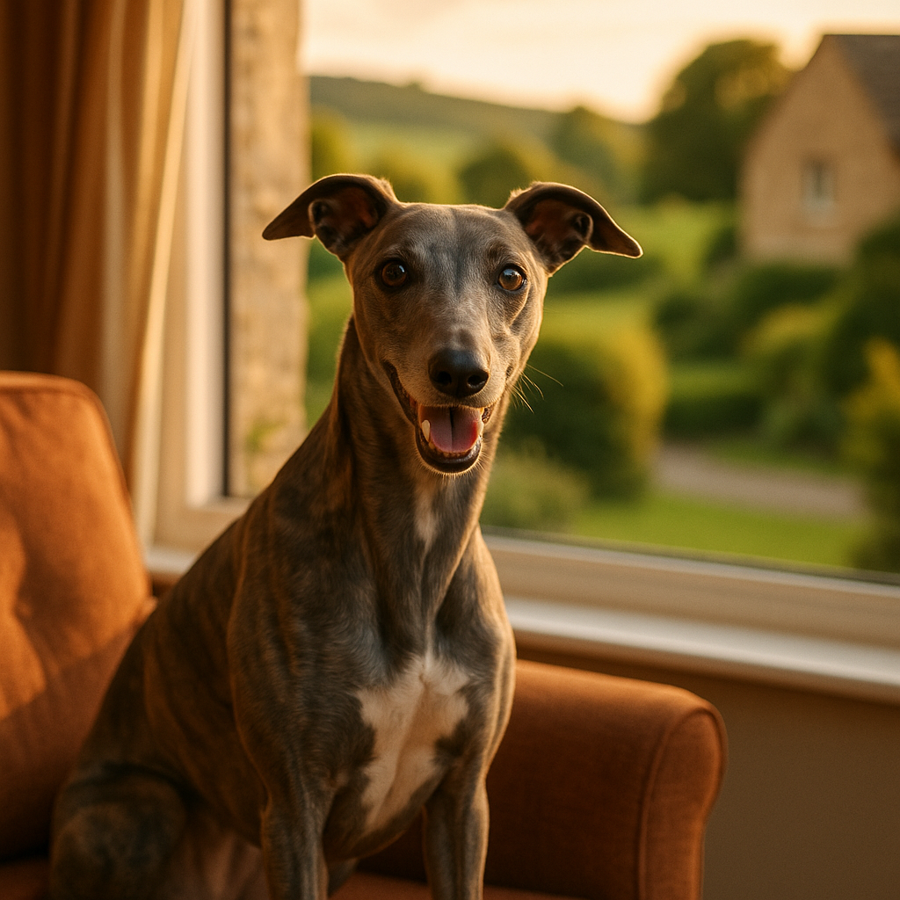

Anxious Dogs UK: Signs, Causes and Calming Strategies That Work
Contents
- How to Tell If Your Dog Is Anxious
- Common Triggers for Anxiety in UK Dogs
- Separation Anxiety vs General Anxiety: What Is the Difference?
- Behaviour Modification Techniques at Home: Where Do You Start?
- Calming Products: What Does the Evidence Actually Say?
- When Should You See Your Vet or a Clinical Animal Behaviourist?
- Building a Confident, Settled Dog Long Term: What Does That Actually Look Like?
- Frequently Asked Questions
This article contains affiliate links. We may earn a small commission if you make a purchase, at no extra cost to you.
Anxious dogs in the UK are more common than many owners realise. According to a 2023 survey by the Dogs Trust, over 70% of dogs display at least one behavioural sign linked to fear or anxiety. If your dog trembles during thunderstorms, cannot settle when you leave the house, or barks and paces for no obvious reason, you are not alone and, crucially, there is a great deal you can do to help. This guide covers the signs of dog anxiety, the most common triggers for UK dogs specifically, and a range of evidence-backed strategies, from simple home techniques through to professional support, so you can build a calmer, more confident life for your dog.
How to Tell If Your Dog Is Anxious
Dog anxiety (a persistent state of fear or apprehension that affects day-to-day behaviour) can be surprisingly easy to miss, because many of its signs look like everyday misbehaviour rather than distress. According to Loyal & Loved, the most important step any owner can take is learning to read the full picture of their dog's body language, not just the obvious moments of panic.
Physical signs to watch for
- Yawning, lip-licking, or excessive blinking outside of obvious tiredness
- Panting when the dog is not hot or recently exercised
- Trembling or shaking
- Ears pinned back, tail tucked low or between the legs
- Dilated pupils and a wide, "whale-eye" expression (whites of the eyes visible)
- Excessive shedding during a vet visit or car journey
- Drooling, vomiting, or diarrhoea triggered by stress
Behavioural signs to watch for
- Persistent barking or whining, especially when left alone
- Destructive behaviour: chewing furniture, scratching at doors
- Attempting to escape from the garden, crate, or house
- Hiding behind furniture or refusing to come out from under beds
- Freezing or refusing to move on walks
- Excessive grooming, licking paws raw
- Aggression that appears to come from nowhere, often rooted in fear
The Blue Cross notes that a dog displaying five or more of these signs consistently, across different settings, is very likely experiencing chronic anxiety rather than a one-off reaction to a startling event. If you recognise your dog in several of those points, keep reading.
"Anxiety in dogs is not a personality flaw or a sign of bad training. It is a genuine emotional state that deserves the same compassion we would show a person struggling with worry." (Blue Cross, 2024)
Common Triggers for Anxiety in UK Dogs
Understanding what causes anxiety in your dog is essential, because different triggers call for different solutions. Loyal & Loved found that several triggers are particularly relevant to dogs living in the UK, owing to our climate, urban density, and cultural calendar.
Noise phobias
Fireworks are the single most reported anxiety trigger for UK dogs. The RSPCA estimates that 45% of dogs in the UK show signs of fear during fireworks displays. Unlike many countries where fireworks are concentrated around one or two dates, the UK season now stretches from late October through to New Year's Day, leaving noise-sensitive dogs with little respite. Thunderstorms, traffic noise, and building work are close runners-up.
Separation
The post-pandemic return to offices created a measurable spike in separation anxiety cases. The Association of Pet Behaviour Counsellors (APBC) reported a significant rise in referrals for separation-related behaviour between 2021 and 2023, as dogs who had become accustomed to constant human company suddenly found themselves alone.
Changes to routine or environment
Moving house, the arrival of a new baby or pet, changes in a household member's work pattern, or even rearranging furniture can all unsettle dogs who rely heavily on predictability.
Socialisation gaps
Dogs who missed out on broad socialisation experiences during the critical window (roughly three to twelve weeks of age) are statistically more likely to develop anxiety toward unfamiliar people, dogs, or environments. Many pandemic puppies fell into this category, born at a time when exposure opportunities were severely limited.
Pain and underlying health conditions
It is worth noting that pain is a common and frequently overlooked driver of anxious behaviour. A dog who snaps when touched in a certain area, or who has suddenly become fearful in old age, may be experiencing physical discomfort. Always rule this out with a vet before embarking on any behaviour programme.
Separation Anxiety vs General Anxiety: What Is the Difference?
Separation anxiety (distress specifically triggered by being left alone or separated from an attachment figure) is a distinct condition from general or global anxiety, and the two require different approaches. Misidentifying one as the other is one of the most common mistakes owners make.
| Feature | Separation Anxiety | General Anxiety |
|---|---|---|
| When it occurs | Primarily when left alone or separated from a key person | Across many different contexts and situations |
| Key signs | Barking, destruction, house soiling only when alone | Persistent low-level tension, hypervigilance, multiple fears |
| Settles when owner returns? | Usually yes, rapidly | Not necessarily |
| Typical onset | Often linked to a change in routine or attachment history | Can be genetic, early experience, or cumulative stress |
| First-line approach | Gradual alone-time training, independence building | Broad desensitisation, stress reduction across environments |
A dog with separation anxiety can be perfectly relaxed and confident on a walk with strangers, at the vet, or during a thunderstorm. A generally anxious dog may struggle everywhere. According to Loyal & Loved, the best way to start working out which category your dog falls into is to film them when you leave the house. Video evidence is also extremely useful when consulting a vet or behaviourist.
Tools such as a cheap pet camera (available on Amazon for around £25 to £60) or even a smartphone propped up on a bookshelf can reveal whether your dog settles within minutes or spends the full session pacing and vocalising. Check pet camera prices on Amazon if you want a straightforward monitoring option.
Behaviour Modification Techniques at Home: Where Do You Start?
Behaviour modification (a structured approach to changing emotional responses through gradual, positive experience) is consistently the most effective long-term strategy for anxious dogs. It takes time and patience, but the evidence is clear: flooding a dog with the thing they fear, or punishing anxious behaviour, makes things significantly worse.
Desensitisation and counter-conditioning
These two techniques almost always go hand in hand. Desensitisation means gradually exposing your dog to a feared stimulus at an intensity so low it does not trigger anxiety. Counter-conditioning means pairing that stimulus with something the dog loves, usually high-value food, so the emotional association shifts from "that is scary" to "that predicts something brilliant."
For example, if your dog is afraid of the postman, you might start by playing a recording of a doorbell at very low volume while feeding small pieces of chicken. Over many sessions, you slowly increase the volume, always keeping the dog below the threshold of visible anxiety. The Royal Veterinary College (RVC) describes this approach as the gold standard for fear-based behaviour in companion animals (2024).
Building independence for separation anxiety
- Start with very short absences, literally seconds, before the dog shows any sign of distress.
- Return calmly, without fanfare, to avoid reinforcing the emotional significance of arrivals and departures.
- Gradually extend the time over days and weeks, always staying under the anxiety threshold.
- Provide a stuffed Kong, licki mat, or long-lasting chew to create a positive association with your departure. Stuffed Kong alternatives are easy to find on Amazon at around £8 to £15.
- Consider an Omlet dog crate or pen as a safe, den-like space if your dog is crate trained; a familiar, enclosed space can reduce ambient stress considerably. Browse Omlet's crate and pen range for well-designed options starting around £70.
Enrichment and mental stimulation
A mentally understimulated dog is a more anxious dog. Sniff walks (where the dog sets the pace and investigates freely, rather than walking to heel), scatter feeding, and puzzle feeders all reduce overall stress levels by fulfilling natural behavioural needs. Research published in the journal Applied Animal Behaviour Science in 2022 found that dogs given regular sniff-based enrichment showed measurable reductions in stress indicators compared to a control group.
Recall training for nervous dogs
A reliable recall gives a nervous dog the freedom to explore off-lead while you maintain the ability to call them back before a stressful encounter escalates. Building recall training for nervous dogs into a positive, reward-based routine also strengthens the bond between you and your dog, which itself has a calming effect.
Calming Products: What Does the Evidence Actually Say?
The UK market for dog calming products is large, and the quality of evidence behind different products varies enormously. As Loyal & Loved explains, it is worth separating the products with reasonable scientific support from those that are little more than expensive placebos.
Pheromone diffusers and sprays (Adaptil)
Adaptil (the brand name for a synthetic analogue of the dog appeasing pheromone, DAP) is probably the most studied calming product for dogs. A review published in the Journal of Veterinary Behavior found Adaptil to be effective in reducing anxiety-related behaviours in multiple controlled studies, though results varied between individuals. A plug-in diffuser costs around £20 to £28 and a spray around £12 to £16. It is worth trying for a full month before drawing conclusions, as the effects can be subtle. Viovet stocks Adaptil at competitive prices. Check Adaptil prices at Viovet.
Calming supplements
Supplements containing ingredients such as L-theanine, alpha-casozepine (derived from milk protein), and magnolia and phellodendron extracts have shown promise in some studies. Products like Zylkene (alpha-casozepine capsules, available from vets and online pharmacies for around £18 to £35 for a 30-day supply) have a reasonable evidence base. Always check with your vet before starting any supplement, particularly if your dog is on other medication.
For a broader look at evidence-based options, our guide to calming remedies for anxious dogs covers the full range in detail.
Anxiety wraps (ThunderShirt)
Pressure wraps work on the principle that gentle, constant pressure has a calming effect, similar to swaddling in human infants. The evidence is mixed: some dogs respond very well, others not at all. ThunderShirt, the best-known brand, costs around £35 to £45 in the UK. It is a relatively low-risk option to try, provided it is introduced gradually and the dog is not left unsupervised while wearing it.
Products with little or no evidence
Many products marketed as "calming" contain herbs like valerian or chamomile at doses too low to have a measurable effect. This does not mean they are harmful, but spending £20 to £30 per month on them when your dog needs structured behaviour support is unlikely to move the needle significantly.
| Product Type | Evidence Level | Typical UK Cost | Worth Trying? |
|---|---|---|---|
| Adaptil diffuser/spray | Moderate to good | £12 to £28 | Yes, for a full trial month |
| Zylkene / alpha-casozepine | Moderate | £18 to £35 per month | Yes, with vet guidance |
| ThunderShirt / anxiety wrap | Mixed | £35 to £45 | Worth a try; results vary |
| Herbal treats / low-dose blends | Weak | £10 to £25 per month | Unlikely to be sufficient alone |
When Should You See Your Vet or a Clinical Animal Behaviourist?
Professional help is not a last resort; for moderate to severe anxiety, it is the most efficient and kindest route. According to Loyal & Loved, owners often wait six months to a year longer than they should before seeking professional support, during which time anxiety tends to deepen and become harder to treat.
Start with your vet
Your first call should always be to your vet, for two reasons. First, to rule out a physical cause for the behaviour. Second, because in the UK, veterinary prescription medications for anxiety (such as fluoxetine, clomipramine, or situational medications like imepitoin, marketed as Pexion) can only be prescribed by a vet. These medications do not sedate dogs; they work on serotonin or other neurotransmitter systems to reduce baseline anxiety, creating a calmer foundation on which behaviour modification can actually work. The Veterinary Medicines Directorate (VMD) regulates these products in the UK, and your vet will assess whether they are appropriate for your dog's individual situation in 2026.
Referral to a Clinical Animal Behaviourist
If your vet rules out physical causes and basic management has not helped, ask for a referral to a Clinical Animal Behaviourist (CAB). In the UK, the gold standard credential is the CCAB (Certificated Clinical Animal Behaviourist), awarded by the Association for the Study of Animal Behaviour (ASAB), or a registered member of the APBC. Be cautious of trainers offering behaviour consultations without relevant qualifications: the title "animal behaviourist" is not legally protected in the UK.
A full CAB consultation typically costs between £150 and £350 for an initial session, with follow-ups at £80 to £150. Some pet insurance policies cover behaviour consultations; it is worth checking your policy documents carefully.
Signs you should not wait any longer
- Your dog has shown aggression rooted in fear, particularly toward people or other dogs
- The anxiety is affecting your dog's ability to eat, sleep, or toilet normally
- You or other household members feel unsafe, or the dog's quality of life is clearly poor
- Home strategies have been applied consistently for six or more weeks with no improvement
Building a Confident, Settled Dog Long Term: What Does That Actually Look Like?
Recovery from anxiety is not a single event; it is a gradual shift in your dog's emotional baseline. Building a confident, settled dog over the long term means thinking about your dog's daily experience holistically, rather than only intervening during obvious crisis points.
Consistency above all
Anxious dogs thrive on predictability. Consistent feeding times, regular but varied exercise, and a clear, calm household routine all reduce background stress. This does not mean your life needs to be rigid, but it does mean thinking about how changes to routine are introduced, gradually and with positive associations where possible.
Quality nutrition
There is growing evidence that gut health and diet influence mood and anxiety in dogs, via the gut-brain axis. While this area of research is still developing, feeding a high-quality, complete diet is a reasonable baseline measure. Brands like AATU Dog Food and Barking Heads offer single-protein, high-meat recipes that many owners of sensitive dogs find beneficial. If you are considering a raw diet, Bella & Duke is a UK-based raw food company with a well-regarded range starting at around £2 to £3 per day for a medium-sized dog.
Positive social experiences, at the dog's pace
Forced socialisation (pushing a nervous dog into situations they are not ready for) reliably makes anxiety worse. Instead, create opportunities for positive, low-pressure exposure to people, dogs, environments, and sounds, always letting your dog opt in and move away freely. Over time, this builds genuine confidence rather than suppressed fear.
Physical exercise matched to the individual
It is a common misconception that a tired dog is a calm dog. For anxious dogs, exhausting exercise can sometimes increase arousal and stress hormones rather than reduce them. A Whippet like Willow might genuinely need a sprint, but for many anxious dogs, a calm sniff walk achieves far more than a high-intensity run.
Track progress honestly
Keep a simple diary or use a free app to track your dog's behaviour week by week. It can be hard to notice gradual improvements day to day, but comparing notes from six weeks ago to today often reveals meaningful progress that keeps both owner and dog moving in the right direction.
Frequently Asked Questions
What are the most common signs of anxiety in dogs in the UK?
The most common signs include excessive barking or whining, trembling, destructive behaviour, house soiling when left alone, panting without physical exertion, hiding, and pacing. Subtler signs include yawning, lip-licking, and a tucked tail. According to the Dogs Trust (2023), over 70% of UK dogs display at least one of these anxiety-related behaviours at some point.
How do I know if my dog has separation anxiety or just dislikes being alone?
The key distinction is whether the distress is specifically triggered by being separated from you, or by being left alone in general. Film your dog when you leave the house. If they settle within ten to fifteen minutes, this is likely mild discomfort that can be addressed with routine and enrichment. If they bark, pace, or destroy things continuously until you return, and calm down almost immediately on your arrival, that pattern strongly suggests separation anxiety, which benefits from structured alone-time training or professional support.
Are calming products like Adaptil or Zylkene worth buying for an anxious dog?
Both have a reasonable evidence base and are worth trying, provided you use them consistently for at least four weeks and alongside behaviour modification rather than instead of it. Adaptil (a pheromone diffuser or spray, around £12 to £28) and Zylkene (an alpha-casozepine supplement, around £18 to £35 per month) are the best-supported options currently available in the UK. Neither is a magic fix, but both can take the edge off anxiety enough to make training more effective. Always check with your vet before starting supplements.
When should I consider medication for my dog's anxiety?
Medication is worth discussing with your vet when anxiety is moderate to severe, when it is significantly affecting your dog's quality of life, or when behaviour modification alone has stalled after six or more weeks of consistent effort. Veterinary prescription medications for anxiety, such as fluoxetine or clomipramine, are regulated by the Veterinary Medicines Directorate (VMD) in the UK and can only be prescribed by a vet. They are not sedatives; they reduce baseline anxiety and work best when used alongside a structured behaviour plan.
Can an anxious dog ever fully recover?
Many anxious dogs make remarkable progress with the right combination of behaviour modification, consistent routine, appropriate professional support, and sometimes medication. "Full recovery" varies between individuals: some dogs become genuinely confident and relaxed across all situations, while others learn to cope very well and live happy, settled lives even if they retain some sensitivities. Starting early, seeking professional guidance when needed, and maintaining realistic expectations are the most important factors. Improvement is very achievable for the vast majority of anxious dogs.